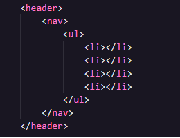
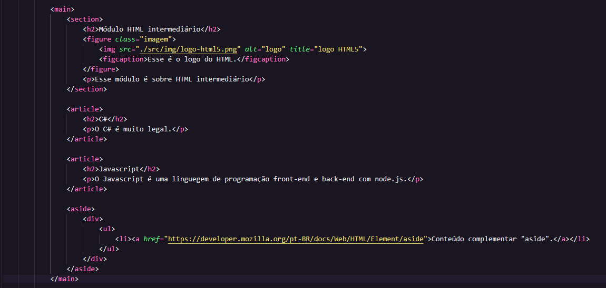
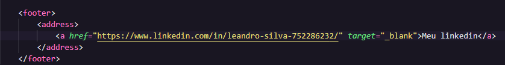

Vamos entender o que significa tags semanticas no HTML e como isso é muito importante na criação de uma página web.
A palavra semântica significa a ciência que estuda o significado, o sentido das palavras e
ainterpretação das palavras.
O HTML hoje em dia tem muito mais que apenas a função de criar paginas como também da significado
para cada parte desse documento.
Para isso usamos as tags semanticas e com isso deixar as páginas muito mais claras para os
programadores e para as
ferramentas de buscas, como o Google, por exemplo.
A primeira que veremos é a tag (header) que pode ser usada tanto para o cabeçalho da nossa pagina
como também para
agrupar títulos (h1, h2, h3... h6).
Essa tag ajuda nos mecanismos de buscas e pode melhorar a performance da nossa pagina rankeando ela
melhor.

A próxima é a tag (nav - 'navigation'= navegação) que geralmente contém uma lista (ul ou ol) e essa
tag pode ser colocada dentro da tag "header" :
cada "ul ou ol" contém "li" dentro e cada uma dessa pode ter a tag "a" (âncora) que te leva para
algum outro lugar usando
um (href="minha-pagina.index.html") seja dentro da própria página ou em páginas exteriores com o
(target="_blank")
A próxima é a tag (main) que é onde vamos colocar o conteúdo principal da nossa página.
Essa tag só pode aparecer apenas uma vez por página, igual acontece com a tag "h1". Não é recomendado
que ela apareceça mais uma vez.
A próxima é a tag (section) que é a tag que representa seções na nossa página, todas as tags que vem
dentro dessa tag
precisam ter relação entre elas como por exemplo:
Podemos colocar todas essas tags dentro da tag "main" sem problemas, inclusive a tag "header"
Observe que todas elas tem relação entre sí, todas pertencem ao mesmo grupo.
A próxima é a tag (article) serve para escrever conteúdos que sejam independentes, como por exemplo:
artigos de um blog que posso ter aquele conteúdo escrito ali, mas que não tem relação com outras coisas
é
apenas um artigo independente. Com esse exemplo, posso pegar esse conteúdo postar em outros lugares e
mesmo
assim ainda fará sentido.
Um exemplo é no site Mozilla Dev que ao clicar para inspacionar o elemnto ele mostra o dev tools e
podemos identificar que o conteúdo todo
está dentro de um "article" e mesmo que alguém pegue isso e coloque em outro lugar ainda sim fará
sentido porque é um
conteúdo que fala sobre um tema específico que fala por sí só.
É recomendado que cada "article" tenha uma tag de título dentro dela (h1, h2, h3...). Podemos colocar
essa tag dentro do "main".
A próxima é a tag (aside) é uma tag que serve para criar uma "div" de conteúdo adicional para o nosso
conteúdo principal, exemplo:
Se estamos escrevendo um artigo de finanças essa tag, "aside", pode ser uma indicação para sites de
financeiras, corretoras ou
sugestões de investimentos. Ela funciona como uma leitura adicional para o nosso conteúdo principal.
Normalmente o "aside" vai aparece como uma coluna lateral no site, mas também pode aparece ao final do
conteúdo
com links para outras coisas extras.
A próxima é a tag (figure) que é usada para definir uma caixa de imagem e uma imagem dentro e também um
texto.
Caso for colocar a tag "figure" e quiser colocar um texto/descrição dentro usamos a tag "figcaption".

A próxima é a tag "footer" que serve para escrever um rodapé para nossa pagina, com alguns links de
contato, trabalhe conosco,
politicas de privacidade e informações gerais.
A última tag de hoje é a "address", nela podemos definir várias coisas como: telefone, endereço, e-mail,
redes sociais etc.
Ela normalmente pode ser colocada na tag "footer" do nosso site.
